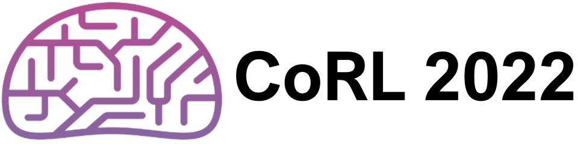

I am on the faculty of FST, University of Macau, and CSE, Texas A&M University. I lead the Computer Vision Lab. I did my postdoc training at the Robotics Institute, CMU, working with Deva Ramanan. I received my PhD from UC-Irvine, where I worked with Charless Fowlkes.
My research lies in Computer Vision, and its interactions with other fields (e.g., machine learning, robotics, NLP, HCI, and graphics), broad applications (e.g., AR/VR, autonomous driving, etc.), and diverse disciplines (e.g., biology, paleoecology, psychology, special education, etc.). My current research focus is on Visual Perception via Learning in the Open World (VPLOW). My recent paper on this topic was recognized for Best Paper / Marr Prize at ICCV 2021. I also actively apply my algorithms to interdisciplinary research including building a high-throughput pollen analysis system, which was featured by the National Science Foundation as that “opens a new era of fossil pollen research”.
I am actively looking for self-motivated PhD students at CIS, FST, University of Macau. PhD students will be fully funded with fellowships. I am NOT actively looking for PhD students at CSE, TAMU.
contact
- email: shu [at] tamu [dot] edu [issues related to TAMU]
- email: skong [at] um [dot] edu [dot] mo [issues related to the University of Macau]
- gmail: aimerykong [at] gmail [dot] com [issues related to others; unlikely to reply]
Links
- The 4th Open World Vision Workshop: Visual Perception via Learning in an Open World (VPLOW) at CVPR'24
- The 3rd Open World Vision Workshop: Visual Perception via Learning in an Open World (VPLOW) at CVPR'23
- The 2nd Workshop on Dealing with Novelty in Open Worlds (DNOW) at WACV'23
- The 2nd Open World Vision Workshop: Visual Perception and Learning in an Open World (VPLOW) at CVPR'22
- The 1st Workshop on Dealing with Novelty in Open Worlds (DNOW) at WACV'22
- The 1st Open World Vision Workshop at CVPR'21
Teaching
- [CISC7014] Advanced Topics in Computer Science: Visual Perception and Learning in the Open World [syllabus] (Spring 2024, UMacau)
- [CISC3027] Special Topics in Computer and Information Science: Visual Perception and Learning in the Open World (Fall 2023, UMacau)
- [CSCE689] Visual Learning for Visual Recognition (Spring 2023, TAMU)
Professional activities
- Demo Chair: CVPR'24
- Workshop Chair: Open-World Vision workshops at CVPR, WACV
- Panalist: NSF GRFP
- Reviewers/program committee: CVPR, ICCV, ECCV, ICLR, NeurIPS, ICML, IJCV, PAMI, RA-L, TIP, Nature, PLOS One, etc.
Research Updates
-
Congratulations to Nick on the SIGGRAPH'24 paper "Towards Unstructured Unlabeled Optical Mocap: A Video Helps!"! (3/23/2024)
-
Call for demos at
 CVPR'24! If you have exciting demos,
consider to submit and present at CVPR in June at Seattle!
The submission is trivial and its deadline is this Sunday, Mar 10, 2024 11:59 PM AOE.
Here is the link to submit.
CVPR'24! If you have exciting demos,
consider to submit and present at CVPR in June at Seattle!
The submission is trivial and its deadline is this Sunday, Mar 10, 2024 11:59 PM AOE.
Here is the link to submit.
-
Congratulations to Shubham, Tian, and Zhiqiu on the CVPR'24
paper "The Neglected Tails of Vision-Language Models"! (2/27/2024)
-
Congratulations to Yunhan on the CVPR'24
paper "Instance Tracking in 3D Scenes from Egocentric Videos"! (2/27/2024)
-
Congratulations to Zeyi and Ye on the CVPR'24
paper "Alpha-CLIP: A CLIP Model Focusing on Wherever You Want"! (2/27/2024)
-
Congratulations to Xiaogang on the CVPR'24
paper "Boosting Image Restoration via Priors from Pre-trained Models"! (2/27/2024)
-
Congratulations to Nahyun, Emory, Muhammad, and Joanne on the CHI'24
 paper "AccessLens: Auto-detecting Inaccessibility of Everyday Objects"! (1/19/2024)
paper "AccessLens: Auto-detecting Inaccessibility of Everyday Objects"! (1/19/2024)
-
Congratulations to Marc-Elie on the PNAS Nexus paper "Deep Learning Approaches to the Phylogenetic Placement of Extinct Pollen Morphotypes"! (11/21/2023)
-
Congratulations to Shubham on the EMNLP'23 paper "Prompting Scientific Names for Zero-Shot Species Recognition"! (10/17/2023)
-
Congratulations to Yunhan, Qianqian and Nahyun on the NeurIPS'23 paper "A High-Resolution Dataset for Instance Detection with Multi-View Instance Capture"! (10/17/2023)
-
Congratulations to Meng on the NeurIPS'23 paper "OV-PARTS: Towards Open-Vocabulary Part Segmentation"! (10/17/2023)
-
Our "3rd Workshop of Visual Perception and Learning in an Open World"
 will be held in conjunction with CVPR'23 on June 18, 2023!
will be held in conjunction with CVPR'23 on June 18, 2023!
 (6/17/2023)
(6/17/2023)
-
Congratulations to Samia on the WACV'23 paper "Creating a Forensic Database of Shoeprints from Online Shoe Tread Photos"! (10/10/2022)
-
Congratulations to Shubham and Jeet on the WACV'23 paper "Far3Det: Towards Far-Field 3D Detection"! (10/10/2022)
-
Congratulations to Zhiqiu on the NeurIPS'22 paper "Continual Learning With an Evolving Class Ontology"! Read more in the webstie. (9/14/2022)
-
Congratulations to Neehar on the CoRL'22  paper "Towards Long Tailed 3D Detection"! (9/10/2022)
-
Our 2nd workshop of Dealing with the Novelty in Open Worlds will be held on Jan 3rd, 2023, at WACV'23 in Waikoloa, Hawaii! (8/15/2021)
-
Congratulations to Yi-Ting, Jinghao, and Zelin on the ECCV'22
 paper "Multimodal Object Detection via Probabilistic Ensembling",
which is accepted for oral presentation!
The proposed method was ranked the first in the KAIST challenge leaderboard.
Code is available in github. (7/8/2022)
paper "Multimodal Object Detection via Probabilistic Ensembling",
which is accepted for oral presentation!
The proposed method was ranked the first in the KAIST challenge leaderboard.
Code is available in github. (7/8/2022)
-
Our paper "OpenGAN: Open-Set Recognition Via Open Data Generation" has been published by IEEE Transactions on Pattern Analysis and Machine Intelligence (PAMI) (6/18/2022)
-
Our paper "Automated identification of diverse Neotropical pollen samples using convolutional neural networks" has been published by Methods in Ecology and Evolution (6/12/2022)
-
Our workshop "Visual Perception and Learning in an Open World"
will be held in conjunction with CVPR'22
(4/29/2022)
-
Congratulations to Shaden on the CVPR'22 paper "Long-Tailed Recognition via Weight Balancing"! Code is available in the github page! (3/2/2022)
-
Our paper "OpenGAN: Open-Set Recognition via Open Data Generation" received honorable mention for Best Paper / Marr Prize at ICCV'21 . Watch this 12min video (10/12/2021)
-
Our in-person workshop Dealing with the Novelty in Open Worlds will be held on Jan 4, 2022, in conjunction with WACV'22
 (8/27/2021)
(8/27/2021)
-
Our challenge Open-World Image Classification
is online now! The challenge will be held in conjunction with
our Open World Vision workshop and CVPR'21  (5/14/2021)
(5/14/2021)
-
Congratulations to Yunhan Zhao on the paper "Camera Pose Matters: Improving Depth Prediction by Mitigating Pose Distribution Bias", which is accepted for oral presentation by CVPR'21
(03/3/2021) -
Our virtual workshop Open-World Vision
will be held in conjunction with
CVPR'21
(12/11/2020)
-
Our work is published on
 "Improving the Taxonomy of Fossil Pollen using Convolutional Neural Networks and Superresolution Microscopy",
and featured by the NSF
"Improving the Taxonomy of Fossil Pollen using Convolutional Neural Networks and Superresolution Microscopy",
and featured by the NSF .
(09/14/2020)
.
(09/14/2020)